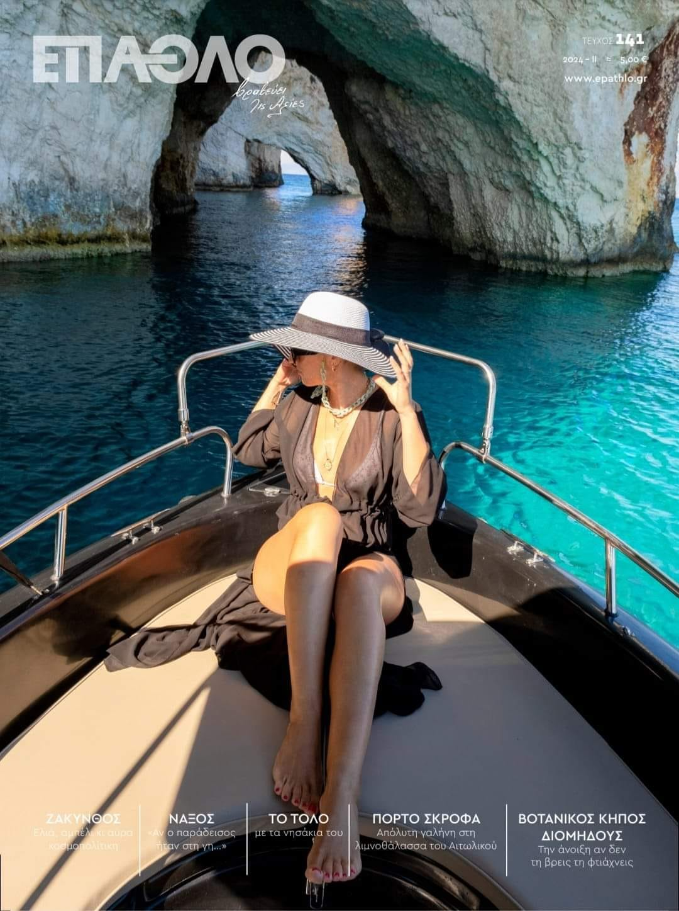
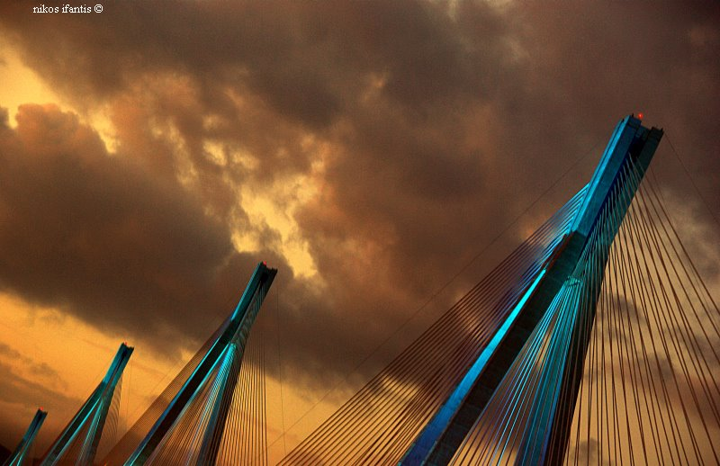

My photograph from the island of Zakynthos became the cover of the travel magazine EPATHLO.
📅 17 April 2024

The presentation of the book “Traces in the Sand” took place on: Τετάρτη 17 Ιανουαρίου 2024 στον χώρο «Το Χασομέρι» (Παπαδιαμαντοπούλου 10, Πάτρα)
The event was a tribute to Alexia Touliou, featuring a book with her photographs, poems, and writings, three years after her sudden passing.
The event included:
Book presentation by Nikos Yfantis, Thaleia Nouarou, Maria Kossyfidou, and Dionysis Karantzas
Projection of Alexia’s photographs.
Jazz-funk live music by CB RA GALO after the event
The book is published by 'To Donti' editions – available in selected bookstores and online at the following link.
Ίχνη στην άμμο – Εκδόσεις Το Δόντι
📅 17 Ιανουαρίου 2024
Two photographs by Nikos Yfantis were selected and placed first (tied) with two other photographers at the PHOS ATHENS 2019 Street Photography competition. They were also included in the top 20 photo exhibition.
📅 17 Νοεμβρίου 2019
In the nationwide Metapolis Photography Competition, from 7,899 photographs and 692 photographers, my work was honored with the 3rd place award.
Grateful to the Metapolis jury for recognizing my vision.
RESULTS
📅 October 4, 2019
Presentation of the photo book titled “575”. The book by Nikos Yfantis, with texts by Alexia Touliou, was presented in Patras on Friday, November 17, 2017, at the bar-café “O Akrovatis”. Architect and photographer Aris Zisimatos gave the opening speech.
📅 17 Νοεμβρίου 2017
The photography exhibition titled “Ash Smudging in Galaxidi” by Nikos Yfantis and Alexia Touliou was held from Friday, March 11 to Clean Monday, March 14, 2016, at the Parthenagogeio Hall in Galaxidi, under the auspices of the Municipality of Delphi. The exhibition had a strong carnival character, presenting their artistic view of the traditional ash-slinging custom. The entrance was free and the attendance was high due to its timing with the event.
📅 11 Μαρτίου 2016
My photograph, which was selected and featured as the cover of the 2016 calendar of the Rio–Antirrio Bridge "Charilaos Trikoupis".
📅 1 Ιανουαρίου 2016

The exhibition “Dreams” by Nikos Yfantis and Alexia Touliou was organized by the Photography Club of Patras “Idyfos” and took place from April 19 to May 4, 2015, at their gallery in Patras. Its title was: 'When I see, I do not see it, and I see it when I don’t…'.
📅 19 Απριλίου 2015
In 2014, Nikos Yfantis was awarded by the GEFYRA S.A. company (which manages the Rio-Antirrio bridge) along with five other photographers. The award recognized his photographic work highlighting the bridge as a monument. The exhibition 'Bridge Photographers' took place at the Exhibition Hall of the bridge from November 29 to December 31, 2014.
📅 29/10/2014
Today, the Photography Club 'Idyfos' launched for the first time in our city a photography festival that became an institution in the years that followed—even during the difficult COVID period. It hosted great exhibitions and events every year, culminating in the Patras Photomarathon.